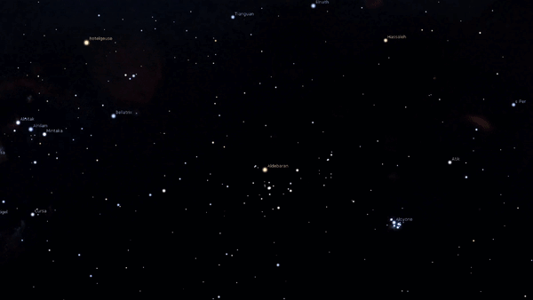

List of DSOs
Legend:
| Annotation | Meaning |
|---|---|
| Bold | Constellation |
| Italics | Star |
List of Messier Objects
M1

How to find
Find “V” shape in Taurus
“V” shape branches into Elnath (Auriga) and Tianguan
From Tianguan, move 1° in the direction of Elnath

Info
| Property | Value |
|---|---|
| Right Ascension | 05h 34m 30s |
| Declination | +22° 00′ 52.2″ |
| Distance | 6500±1600 ly (2000±500 pc) |
| Visual magnitude | 8.4 |
| Apparent Dimension | 6′x4′ |
sources: for distance, for everything else
| Messier number | Common name | Picture | Object type | How to find | Constellation | \(m\) |
|---|---|---|---|---|---|---|
| M1[17] | Crab Nebula |  |
Supernova remnant | Find “V” shape in Taurus “V” shape branches into Elnath (Auriga) and Tianguan From Tianguan, move 1° in the direction of Elnath |
Taurus | 8.4 |
| M2[18] | – |  |
Globular cluster | Find the second star on the long arm of Aquarius (Sadalsuud) Draw a line to closest leg end of Pegasus (Enif) Move 4°45’ in the direction of this line from Sadalsuud |
Aquarius | 6.3 |
| M3[19] | – |  |
Globular cluster | Find Coma Berenices On the side pointing to Bootes, extend in the direction of the line by 6°51’ Or, Approximately 12° top right of Arcturus |
Canes Venatici | 6.2 |
| M4[20] | – |  |
Globular cluster | Beside Antares | Scorpius | 5.9 |
| M5[21] | Rose Cluster |  |
Globular cluster | From Arcturus, draw line through straight leg of Bootes, extend for 15° | Serpens | 6.7 |
| M6[22] | Butterfly Cluster |  |
Open cluster | Draw a line from Lesath to Shaula at the tail of Scorpius Extend line by 4°42’ |
Scorpius | 4.2 |
| M7[23] | Ptolemy Cluster |  |
Open cluster | From previous line drawn to find M6, go perpendicularly up by approximately the same distance | Scorpius | 3.3 |
| M8[24] | Lagoon Nebula |  |
Nebula with cluster | Form an equilateral triangle with Kaus Borealis and Polis, M8 is on the other end | Sagittarius | 6.0 |
| M9[25] | – |  |
Globular cluster | Find the tombstone of Ophiuchus Taking Rasalhague to be the top, M9 is 3°37’ from the bottom left |
Ophiuchus | 8.4 |
| M10[26] | – |  |
Globular cluster | Middle of Ophiuchus | Ophiuchus | 6.4 |
| M11[27] | Wild Duck Cluster |  |
Open cluster | Find the longest side of Scutum Starting from the star closest to Aquila, move 1°33’ along this side, M11 is slightly outside the shape of Scutum |
Scutum | 6.3 |
| M12[28] | – |  |
Globular cluster | Middle of Ophiuchus, towards the right of M10, side opposite of M9 and M14 | Ophiuchus | 7.7 |
| M13[29] | Great Globular Cluster in Hercules |  |
Globular cluster | Find the Trapezium of Hercules. On the side closer to Corona Borealis, M13 is at the midpoint of that side. | Hercules | 5.8 |
| M14[30] | – |  |
Globular cluster | Find side of Ophiuchus closer to Sagittarius. M14 is 7°49’ from the top end, and lies 1°37’ outside the tombstone | Ophiuchus | 8.3 |
| M15[31] | – |  |
Globular cluster | Find the corner of the square of Pegasus that is diagonally opposite of the corner that links to Andromeda. Make your way down the arm until it ends at Enif, draw a line from Biham to Enif, extend by 4° to M15 | Pegasus | 6.2 |
| M16[32] | Eagle Nebula |  |
H II region nebula with cluster | Find side of Scutum closest to Sagittarius. Extend the side in the direction of Ophiuchus by 2°34’. | Serpens | 6.0 |
| M17[33] | Omega, Swan, Horseshoe, or Lobster Nebula |  |
H II region nebula with cluster | Forms an equilateral triangle with M16 and the closest star in Scutum. | Sagittarius | 6.0 |
| M18[34] | – |  |
Open cluster | Right beside M17, direction of Sagittarius. | Sagittarius | 7.5 |
| M19[35] | – |  |
Globular cluster | Draw a line from Sabik in Ophiuchus to Xamidura in Scorpius. M19 is in the middle. | Ophiuchus | 7.5 |
| M20[36] | Trifid Nebula |  |
H II region nebula with cluster | Right beside M8, in the direction of Polis | Sagittarius | 6.3 |
| M21[37] | – |  |
Open cluster | Right beside M20, in the direction of Polis | Sagittarius | 6.5 |
| M22[38] | Sagittarius Cluster |  |
Globular cluster | Find the line connecting Polis and Kaus Borealis. From Kaus Borealis, draw a perpendicular line in the direction away from M8 of length 2°30’. | Sagittarius | 5.1 |
| M23[39] | – |  |
Open cluster | Find the tail of Serpens. Take the 2 stars pointing towards Ophiuchus and extend in the other direction by 5°55’. | Sagittarius | 6.9 |
| M24[40] | Sagittarius Star Cloud |  |
Milky Way star cloud | Between Polis and M17 | Sagittarius | 4.6 |
| M25[41] | – |  |
Open cluster | Find M18. Draw a line from M18 to the closest star in Scutum. Now draw another line perpendicular to that from M18 of length 3°30’ pointing towards Sagittarius. | Sagittarius | 4.6 |
| M26[42] | – |  |
Open cluster | Middle of Scutum | Scutum | 8.0 |
| M27[43] | Dumbbell Nebula |  |
Planetary nebula | Starting from the midpoint of the 2 stars at the tip of the arrow of Sagitta, move 3° in the direction of Vulpecula. | Vulpecula | 7.5 |
| M28[44] | – |  |
Globular cluster | Lies on the line between Polis and Kaus Borealis. Move 1° away from Kaus Borealis along the line | Sagittarius | 7.7 |
| M29[45] | Cooling Tower |  |
Open cluster | Find the star at the center of the cross of Cygnus (Sadr). Move 1°37’ in the direction of Sagitta. | Cygnus | 7.1 |
| M30[46] | Jellyfish Cluster |  |
Globular cluster | Find the 2 triangles of Capricornus. Take the 3 stars closest to Deneb Algedi. Form a rectangle with the three stars, M30 is on the corner with no stars. | Capricornus | 7.7 |
| M31[47] | Andromeda Galaxy |  |
Spiral galaxy | Find Andromeda. Find Mirach, the second star from Alpheratz, corner star of Pegasus. Form a line from Mirach to a star perpendicular to Andromeda. Extend the line 7°33’ from Mirach. | Andromeda | 3.4 |
| M32[48] | – |  |
Dwarf elliptical galaxy | Same as M31 | Andromeda | 8.1 |
| M33[49] | Triangulum Galaxy |  |
Spiral galaxy | From the line drawn for M31, go 7° from Mirach in the opposite direction of M31. | Triangulum | 5.7 |
| M34[50] | – |  |
Open cluster | Form an equilateral triangle using Algol and Miram in Perseus. The other end of the triangle is M34. | Perseus | 5.5 |
| M35[51] | – |  |
Open cluster | Find the twins of Gemini. From Castor (the twin closer to Auriga), trace a line to the “boot”, a curve of stars towards the bottom of the constellation M35 is right above the boot. | Gemini | 5.3 |
| M36[52] | – |  |
Open cluster | Form a line from Elnath to Mahasim in Auriga. Draw a perpendicular line from the midpoint of this line, extend this perpendicular line by 1°42’ into Auriga. | Auriga | 6.3 |
| M37[53] | – |  |
Open cluster | Form a line from Elnath to Mahasim in Auriga. Draw a perpendicular line from the midpoint of this line and extend it towards Gemini by 2°. | Auriga | 6.2 |
| M38[54] | – |  |
Open cluster | Extend the previous perpendicular line by 3°55’ in the other direction. | Auriga | 7.4 |
| M39[55] | – |  |
Open cluster | Form a line from Deneb to the star furthest away from Cygnus in Lacerta. Move 9°8’ along this line. | Cygnus | 5.5 |
| M40[56] | Winnecke 4 |  |
Double star | Find the Big Dipper. Form a line from Phecda to Megrez and extend it by 1°23’. | Ursa Major | 9.7 |
| M41[57] | – |  |
Open cluster | Find Sirius. Go 4° towards the South. | Canis Major | 4.5 |
| M42[58] | Orion Nebula |  |
H II region nebula | Right under Orion’s belt. In the direction of Rigel. | Orion | 4.0 |
| M43[59] | De Mairan's Nebula |  |
H II region nebula (part of the Orion Nebula) | Same as M42 | Orion | 9.0 |
| M44[60] | Beehive Cluster |  |
Open cluster | Find the center line of stars in Cancer. M44 is around the middle. | Cancer | 3.7 |
| M45[61] | Pleiades |  |
Open cluster | Visible to naked eye | Taurus | 1.6 |
| M46[62] | – |  |
Open cluster | Form a line from Sirius to Muliphein, star on the head of Canis Major. Continue in the same direction for 8°. | Puppis | 6.1 |
| M47[63] | – |  |
Open cluster | Using the same line for M46, move 1° in the same direction. | Puppis | 4.2 |
| M48[64] | – |  |
Open cluster | Find the head of Hydra. Form a line between the 2 stars that are the furthest apart. Extend towards the direction of Monoceros by an additional 11°. | Hydra | 5.5 |
| M49[65] | – |  |
Elliptical galaxy | Find Virgo and Leo. In the region between Virgo and Denebola. | Virgo | 9.4 |
| M50[66] | – |  |
Open cluster | Form a line from Sirius to the tip of the triangle head of Canis Major. Continue in the same direction for about 4°. | Monoceros | 5.9 |
| M51[67] | Whirlpool Galaxy |  |
Spiral galaxy | Form a line from Mizar to Alkaid, the two stars at the end of the handle on the Big Dipper. Turn 90° towards Canes Venatici. Move about 3° in that direction. | Canes Venatici | 8.4 |
| M52[68] | – |  |
Open cluster | Form a line from Shedar to Caph, 2 stars on the narrower end of Cassiopeia. Extend from Caph by 6°. | Cassiopeia | 5.0 |
| M53[69] | – |  |
Globular cluster | Find the 2 stars from the corner of Virgo closest to Coma Berenices. Form a line between them and extend by 7°30’ in the direction of Coma Berenices. | Coma Berenices | 8.3 |
| M54[70] | – |  |
Globular cluster | Bottom left of the teapot of Sagittarius. | Sagittarius | 8.4 |
| M55[71] | – |  |
Globular cluster | Form a line between the 2 stars on the side of the teapot of Sagittarius furthest from Scorpius. Extend the line by 8° in the direction of the tail of Sagittarius. | Sagittarius | 7.4 |
| M56[72] | – |  |
Globular cluster | Form a line from the tail star of Cygnus to the side of Lyra furthest from Vega. M56 is 3°50’ from the tail of Cygnus on this line. | Lyra | 8.3 |
| M57[73] | Ring Nebula |  |
Planetary nebula | Find the parallelogram of Lyra. M57 lies in the midpoint of the smaller side opposite of Vega. | Lyra | 8.8 |
| M58[74] | – |  |
Barred Spiral galaxy | Find Virgo and Leo. In the region between Virgo and Denebola. | Virgo | 10.5 |
| M59[75] | – |  |
Elliptical galaxy | Find Virgo and Leo. In the region between Virgo and Denebola. | Virgo | 10.6 |
| M60[76] | – |  |
Elliptical galaxy | Find Virgo and Leo. In the region between Virgo and Denebola. | Virgo | 9.8 |
| M61[77] | – |  |
Spiral galaxy | Find Virgo and Leo. In the region between Virgo and Denebola. | Virgo | 10.2 |
| M62[78] | – |  |
Globular cluster | Between Scorpius and Ophiuchus. | Ophiuchus | 7.4 |
| M63[79] | Sunflower Galaxy |  |
Spiral galaxy | From the side of Coma Berenices pointing towards the Big Dipper, extend by 14°(approximately midway to Mirzar) | Canes Venatici | 9.3 |
| M64[80] | Black Eye Galaxy |  |
Spiral galaxy | Within the square of Coma Berenices. | Coma Berenices | 9.4 |
| M65[81] | Leo Triplet |  |
Barred Spiral galaxy | Form a line from Zosma to Chertan, the 2 stars that form the tail triangle of Leo with Denebola. Extend south by an additional 3.5°. | Leo | 10.3 |
| M66[82] | Leo Triplet |  |
Barred Spiral galaxy | Same as M65 | Leo | 8.9 |
| M67[83] | – |  |
Open cluster | Form a line through the middle 2 stars of Cancer. Extend by 6°33’ towards Hydra. | Cancer | 6.1 |
| M68[84] | – |  |
Globular cluster | Find Corvus. Extend the side furthest from Crater by 3°20’. | Hydra | 9.7 |
| M69[85] | – |  |
Globular cluster | Bottom right of the teapot of Sagittarius. | Sagittarius | 8.3 |
| M70[86] | – |  |
Globular cluster | Midpoint of the base of the teapot in Sagittarius. | Sagittarius | 9.1 |
| M71[87] | – |  |
Globular cluster | Midpoint of the 2 stars that form the body of the arrow of Sagitta. | Sagitta | 6.1 |
| M72[88] | – |  |
Globular cluster | Form a line from (Albali) the end star of Aquarius, to the middle star of Capricornus. Move 3°26’ from Aquarius. | Aquarius | 9.4 |
| M73[89] | – |  |
Asterism | 1°23’ from M72. | Aquarius | 9.0 |
| M74[90] | Phantom Galaxy[91] |  |
Spiral galaxy | Extend the line between the 2 brightest stars in Aries by 10.5° towards Pisces. | Pisces | 10.0 |
| M75[92] | – |  |
Globular cluster | Between Sagittarius and Capricornus. | Sagittarius | 9.2 |
| M76[93] | Little Dumbbell Nebula |  |
Planetary nebula | Starting from (Almach) tails star of Andromeda, go 9°42’ into Cassiopeia. | Perseus | 10.1 |
| M77[94] | Cetus A |  |
Spiral galaxy | Find the head of Cetus, starting there, move down its neck by one star to δ Ceti, then turn 90° and move 53’ in the direction of Eridanus. | Cetus | 9.6 |
| M78[95] | – |  |
Diffuse nebula | Starting from Alnitak, go 2°30’ in the direction of Betelguese. | Orion | 8.3 |
| M79[96] | – |  |
Globular cluster | Form a line from the 2 middle stars of Lepus, move 3°55’ in the direction opposite of Orion. | Lepus | 8.6 |
| M80[97] | – |  |
Globular cluster | Find the 3 claws of Scorpius. Midway between the claw closest to Ophiuchus. | Scorpius | 7.9 |
| M81[98] | Bode's Galaxy |  |
Spiral galaxy | Starting from Draco’s tail star, find a dim star 4°20’ in the direction of Lynx. Form a line between the two stars, extend by another 4° in the same direction. | Ursa Major | 6.9 |
| M82[99] | Cigar Galaxy |  |
Starburst galaxy | Same as M81. | Ursa Major | 8.4 |
| M83[100] | Southern Pinwheel Galaxy |  |
Barred Spiral galaxy | Form a line from the tails star of Hydra to the head star of Centaurus (Menkent). Move 8°50’ from Menkent along this line. | Hydra | 7.5 |
| M84[101] | – |  |
Lenticular galaxy | Virgo supercluster. Between Virgo and Leo. | Virgo | 10.1 |
| M85[102] | – |  |
Lenticular galaxy | Virgo supercluster. Between Virgo and Leo. | Coma Berenices | 10.0 |
| M86[103] | – |  |
Lenticular galaxy | Virgo supercluster. Between Virgo and Leo. | Virgo | 9.8 |
| M87[104] | Virgo A |  |
Elliptical galaxy | Virgo supercluster. Between Virgo and Leo. | Virgo | 9.6 |
| M88[105] | – |  |
Spiral galaxy | Virgo supercluster. Between Virgo and Leo. | Coma Berenices | 10.4 |
| M89[106] | – |  |
Elliptical galaxy | Virgo supercluster. Between Virgo and Leo. | Virgo | 10.7 |
| M90[107] | – |  |
Spiral galaxy | Virgo supercluster. Between Virgo and Leo. | Virgo | 10.3 |
| M91[108] | – |  |
Barred Spiral galaxy | Virgo supercluster. Between Virgo and Leo. | Coma Berenices | 11.0 |
| M92[109] | – |  |
Globular cluster | Find the star on the trapezium of Hercules closest to Lyra. Form a line from the star to Rastaban the star in Draco closest to the trapezium. | Hercules | 6.3 |
| M93[110] | – |  |
Open cluster | 1°24’ from Azmidi, star at the head of Puppis. | Puppis | 6.0 |
| M94[111] | Croc's Eye or Cat's Eye |  |
Spiral galaxy | Find the midpoint of Canes Venatici. Move 1°37’ in the direction of Ursa Major perpendicularly. | Canes Venatici | 9.0 |
| M95[112] | – |  |
Barred Spiral galaxy | Find the midpoint of the line between Regulus and Chertan in Leo. Move 2°16’ perpendicularly in the direction away from Leo. | Leo | 11.4 |
| M96[113] | – |  |
Spiral galaxy | Same as M95. | Leo | 10.1 |
| M97[114] | Owl Nebula |  |
Planetary nebula | Find Merak and Phecda, 2 stars at the bottom of the ladle of Ursa Major. Starting from Merak, go 2°7’ towards Phecda. Move perpendicularly away from Ursa Major by 50’. | Ursa Major | 9.9 |
| M98[115] | – |  |
Spiral galaxy | Virgo supercluster. Between Virgo and Leo. | Coma Berenices | 11.0 |
| M99[116] | – |  |
Spiral galaxy | Virgo supercluster. Between Virgo and Leo. | Coma Berenices | 10.4 |
| M100[117] | – |  |
Spiral galaxy | Virgo supercluster. Between Virgo and Leo. | Coma Berenices | 10.1 |
| M101[118] | Pinwheel Galaxy |  |
Spiral galaxy | Starting from Mirzar, the star at the bent of the handle of the Big Dipper. In the direction of Hercules, find a dim star 2°26’ away. Form a line from Mirzar to this star extend by another 3°15’. | Ursa Major | 7.9 |
| M102[119] | Spindle Galaxy |  |
Lenticular galaxy | Find Draco and Thuban. Find another star on Draco right behind Thuban towards Draco’s tail. Extend this line by 11°27’. | Draco | 10.7 |
| M103[120] | – |  |
Open cluster | Between Ruchbah and Segin. | Cassiopeia | 7.4 |
| M104[121] | Sombrero Galaxy |  |
Spiral galaxy | Between Virgo and Corvus. | Virgo | 9.0 |
| M105[122] | – |  |
Elliptical galaxy | Same as M95. | Leo | 10.2 |
| M106[123] | – |  |
Spiral galaxy | Between Canes Venatici and Ursa Major. | Canes Venatici | 9.1 |
| M107[124] | – |  |
Globular cluster | Starting from Saik, the star in Ophiuchus closest to Scorpius, move 2°43’ in the direction of Scorpius. | Ophiuchus | 8.9 |
| M108[125] | – |  |
Barred Spiral galaxy | Find Merak and Phecda, 2 stars at the bottom of the ladle of Ursa Major. Starting from Merak, go 1°28’ towards Phecda. Move perpendicularly away from Ursa Major by 20’. | Ursa Major | 10.7 |
| M109[126] | – |  |
Barred Spiral galaxy | Find Merak and Phecda, 2 stars at the bottom of the ladle of Ursa Major. Starting from Phecda, extend the line by 40’. | Ursa Major | 10.6 |
| M110[127] | – |  |
Dwarf elliptical galaxy | Same as M31. | Andromeda | 9.0 |
Extra Deep Sky Objects
| Name | Number | Type | Constellation | How to Find It? |
|---|---|---|---|---|
| Double Cluster | NGC 884 & 869 | Open star cluster | Between Perseus and Cassiopeia | Draw a line from Navi, the center star of Cassiopeia, to Ruchbah, the bottom star of the wider triangle in Cassiopeia, continue the line to the double clusters. |
| Helix nebula | NGC 7293 | Planetary nebula | Aquarius | Start with Fomalhaut in Pisces Austrinus, then find a faint star above it, and two faint stars below it, both forming Pisces Austrinus. Draw a line from the middle of the two bottom stars to the top star, continue to Helix nebula. |
| Sculptor’s spiral | NGC 253 | galaxy | Sculptor | Start with the arc of Aquarius that is further away from Pisces Austrinus, then continue down to Diphda in Cetus, from there, move perpendicular to the direction earlier towards sculptor, you should find the galaxy on your way there. |
| Flame nebula | NGC 2024 | Cluster associated with nebulosity | Orion | Right beside the belt star of Alnitak. |
| Tau Canis Majoris cluster | NGC 2362 or C64 | Open cluster | Canis Major | |
| Great barred spiral galaxy | NGC 1365 | Barred spiral galaxy | Fornax | |
| Fornax A | NGC 1316 | Elliptical galaxy collided with another galaxy | Fornax |